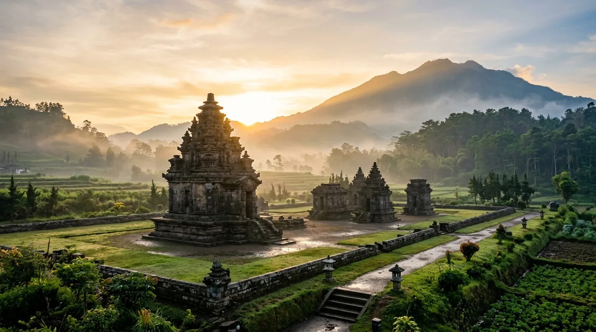

Telusuri lima babak monumental peradaban tanah Jawa dari fajar kerajaan kuno, era keemasan candi mandala, perlawanan kemerdekaan, hingga adiluhung warisan dunia dalam galeri 3D interaktif.
Babak 01 / 05· ± Abad ke-4 – ke-7 M

Fajar Peradaban Jawa Tengah
± Abad ke-4 – ke-7 M · Kalingga & Percandian Dieng
Pusaka Arsitektur Abad ke-7 MKompleks Percandian DiengKabupaten Banjarnegara & Wonosobo